手写 Linux 块设备：RAM 磁盘和 Buffer Cache
前言
本文是关于 内核模块 的，从最简单的 hello 模块开始，再做成 1MB 的 RAM 磁盘，最后按 xv6 的 Buffer Cache 加一层块缓存
内核版本是 6.6.87.2，环境是 WSL
感觉好像就 请求处理 有点区别，就懒得往 4.x / 5.x 上弄了
内核模块
简述
内核 是操作系统的核心，基于硬件的第一层软件扩充，提供最基本的功能，决定性能和稳定性
用户程序跑在 用户空间（User space），内核跑在 内核空间（Kernel space）
- Kernel space 可以执行 任意命令，调用系统的一切资源，具有 最高权限
- User space 只能做 简单运算，以及使用一些 封装后的 API（比如
printf），不能直接调用系统资源，必须通过 系统接口（system call）向内核发指令
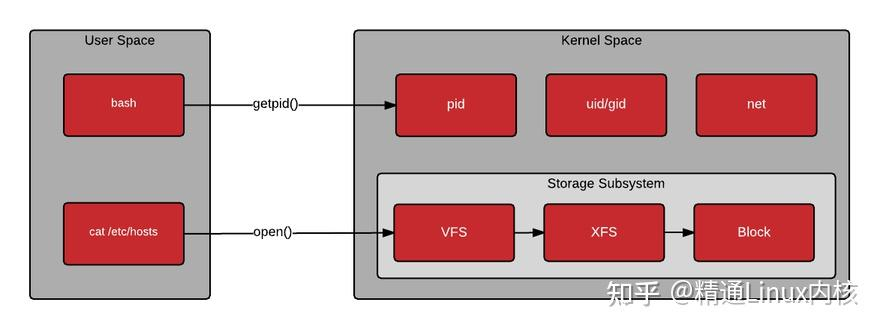
内核分成 两种架构：
- 微内核（Micro Kernel）
- 内核只提供核心功能，比如进程管理、存储器管理、进程间通信、I/O 设备管理
- 应用层 IPC、文件系统、设备驱动 不进内核，改这些模块不会碰到微内核核心
- 动态扩展性强
- 微内核模块运行 不依赖内核，模块跑在 用户空间
- Windows、华为鸿蒙 属于 微内核
- 宏内核（Monolithic Kernel）
- 把微内核那些，再加上 IPC、文件系统、设备驱动，编译成一个整体
- 执行效率很高
- 想改、想加一个功能（比如加设备驱动）往往要 重新编译一遍内核
- Linux 就是宏内核。为了解决这个缺点，引入了 内核模块
- 宏内核编译出来的内核模块，跑在 内核空间，所以才叫内核模块
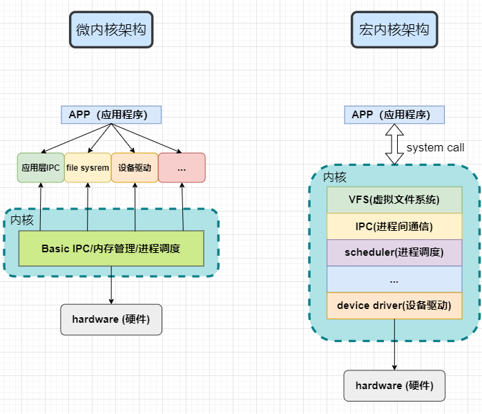
内核模块 就是实现了某个功能的一段内核代码，内核跑着的时候可以 动态加载 进内核，从而动态增加功能
- 模块是有独立功能的程序，可以 单独编译，但不能 独立运行
- 运行时链接进内核，作为内核的一部分在 内核空间 跑，和用户空间的进程不一样
- 由一组函数和数据结构组成，用来实现一种文件系统、一个驱动程序，或其他内核上层功能
- 模块本身 不被编译进内核映像，这控制了内核的大小
- 一旦加载，它就和内核中的其它部分完全一样
编译内核模块需要对应版本的 linux-headers
我这里直接用 WSL 来做，WSL 不自带，所以下了对应版本的 linux kernel 源码，编译并切换内核
实现
最小模块就是 注册加载 和 卸载：
#include <linux/module.h>
#include <linux/kernel.h>
#include <linux/init.h>
MODULE_LICENSE("GPL");
MODULE_AUTHOR("Nailong");
MODULE_DESCRIPTION("Basic Block Cache Module");
//init function
static int __init bcache_init(void) {
printk(KERN_INFO "Block Cache Module Loaded\n");
return 0;
}
//exit function
static void __exit bcache_exit(void) {
printk(KERN_INFO "Block Cache Module Unloaded\n");
}
//init
module_init(bcache_init);
//exit
moule_exit(bcache_exit);
- 头文件
- 编译内核模块需要
linux-headers #include <linux/module.h>#include <linux/kernel.h>#include <linux/init.h>
- 编译内核模块需要
- 模块信息
MODULE_LICENSE("GPL")：模块许可。不写的话，不少 GPL 符号会用不了MODULE_AUTHOR("Nailong")：模块作者MODULE_DESCRIPTION("Basic Block Cache Module")：模块描述
- 模块加载函数
bcache_init里printk(KERN_INFO "Block Cache Module Loaded\n")- 返回 0 表示加载成功
- 模块卸载函数
bcache_exit里打 Unloaded
- 模块注册
module_init(bcache_init)module_exit(bcache_exit)- 把两个函数挂到加载和卸载路径上
我写了一个 Makefile 来编译。RAM 磁盘和 Buffer Cache 那两份几乎一样，只把 obj-m 换成 bcache_blkdev.o / bcache.o：
# name of object file
obj-m := bcache_basic.o
# core source path
LINUX_KERNAL_PATH := /lib/modules/$(shell uname -r)/build
# directory
CURRENT_PATH := $(shell pwd)
.PHONY: all clean install uninstall info status logs
all:
@echo "Building bcache kernel module..."
@make -C $(LINUX_KERNAL_PATH) M=$(CURRENT_PATH) modules
@echo "Building success."
# clear
clean:
@echo "Cleaning build files..."
@make -C $(LINUX_KERNAL_PATH) M=$(CURRENT_PATH) clean
@echo "Clean completed"
make all：编译make clean：清理
常用命令：
- 插入模块：
sudo insmod bcache_basic.ko - 卸载模块：
sudo rmmod bcache_basic - 查看模块信息：
modinfo bcache_basic.ko - 查看系统模块：
lsmod - 查看系统日志信息：
dmesg
编译模块
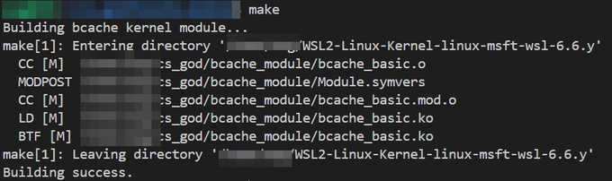
模块信息
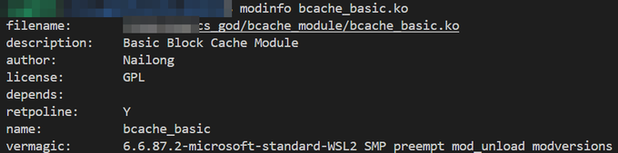
查看输出
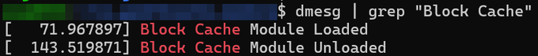
RAM 磁盘
简述
这里我就写一个 RAM 磁盘驱动了，然后模拟 1MB 的块设备，设备名是 ramdisk
扇区 就是磁盘的 最小可寻址存储单元，512 个字节。文件系统坐在块设备上面，按扇区寻址
单队列时代是 blk-sq，IOPS 高了之后问题很明显：
- 请求队列锁竞争
blk-sq用 spinlock，IO 要访问请求队列必须拿锁，开销很大
- 硬件中断
- 高的 IOPS 意味着高的中断数量
- 远端内存访问
- 如果提交 IO 请求的 CPU 不是接收硬件中断的 CPU，且这两个 CPU 没有共享缓存，拿请求队列锁的过程中还有远端内存访问
所以块设备走 多队列 Multi-queue（blk-mq）：
- 软件暂存队列（Software Staging Queue）
blk-mq给每个 CPU 分配一个软件队列- bio 的提交 / 完成处理、IO 请求暂存（合并、排序）、IO 请求标记、IO 调度、IO 记账都在这个队列上
- 每个 CPU 单独一条队列，这些 IO 操作可以同时进行，不存在锁竞争
- 硬件派发队列（Hardware Dispatch Queue）
- 给存储器件的每个硬件队列分配一个硬件派发队列，负责存放软件队列派发过来的 IO 请求
- 目前多数存储器件只有 1 个硬件队列
- 驱动初始化时，
blk-mq按固定映射把一个或多个软件队列 map 到一个硬件派发队列，并保证映射到每个硬件队列的软件队列数量基本一致
tag_set- 为了处理 并行，追踪 IO 请求
- 硬件并行处理时，某个请求完成了，要能一下子找到这个请求的数据结构
- 发送： 内核要发一个 I/O 请求给硬件时，从标签集
tag_set里拿一个可用的 Tag（一个小整数，比如 0 到 255） - 并行： 内核可以把数百个带有不同 Tag 的请求并行发给硬件
- 接收： 硬件完成其中一个请求（比如 Tag 25）时，只告诉内核：“Tag 25 的请求完成了。”
请求里的数据页不一定能直接 memcpy。文件系统（比如 ext4）向块设备驱动发读写请求时，数据存在 页（Page） 里，这些页可能在内核的 高端内存（High Memory） 或 非线性地址空间 中
32 位系统上，或者现代 Linux 处理大量内存时：
- 内核直接访问： 内核代码（驱动）通常跑在固定的、线性的地址空间（低端内存）里
- 请求数据页的地址： I/O 请求
req携带的数据bvec.bv_page可能位于内核当前无法直接寻址的 高端内存 中
所以要做 内存映射：
-
kmap_atomic(bvec.bv_page)- 临时把请求中的数据页映射到内核可以直接访问的虚拟地址空间
- 返回值是
buffer，也就是数据页的线性地址，现在驱动可以直接拿它memcpy - atomic 是一种快速映射，用于原子上下文（中断或块请求队列），不能被阻塞
-
kunmap_atomic(buffer)- 数据传输完成后必须立刻解除这个临时映射，把地址资源还回内核
- 不解除的话，可能会耗尽内核的地址空间，导致系统崩溃
-
映射 是为了给内核驱动程序提供一个临时的、可用的虚拟地址，以便访问 I/O 请求中包含的实际数据
实现
#include <linux/module.h>
#include <linux/kernel.h>
#include <linux/fs.h>
#include <linux/blkdev.h>
#include <linux/blk-mq.h>
#include <linux/vmalloc.h>
#include <linux/bio.h>
#define DEV_NAME "ramdisk"
#define DISK_SIZE (1*1024*1024) //1MB
MODULE_LICENSE("GPL");
MODULE_AUTHOR("Nailong");
MODULE_DESCRIPTION("Block Device Driver with Cache");
static dev_t dev_num; //设备号
static struct gendisk *disk; //磁盘设备
static struct blk_mq_tag_set tag_set; //多队列标签集
static unsigned char *disk_data; //磁盘数据
//请求处理函数
static blk_status_t bcache_queue_rq(struct blk_mq_hw_ctx *hctx, const struct blk_mq_queue_data *bd){
struct request *req = bd->rq;
struct bio_vec bvec;
struct req_iterator iter;
sector_t sector;
void *buffer;
size_t len;
//启动请求
blk_mq_start_request(req);
//获取初始扇区
sector = blk_rq_pos(req);
//遍历所有bio
rq_for_each_segment(bvec, req, iter) {
len = bvec.bv_len;
if (sector + (len >> 9) > DISK_SIZE / 512) {
blk_mq_end_request(req, BLK_STS_IOERR);
return BLK_STS_IOERR; //越界检查
}
//建立映射
buffer = kmap_atomic(bvec.bv_page);
if (rq_data_dir(req) == READ) {
//模拟读操作
memcpy(buffer + bvec.bv_offset, disk_data + sector * 512, len);
} else {
//模拟写操作
memcpy(disk_data + sector * 512, buffer + bvec.bv_offset, len);
}
//解除映射
kunmap_atomic(buffer);
sector += len >> 9;//转换为扇区数（512B/sector）
}
//标记请求完成
blk_mq_end_request(req, BLK_STS_OK);
return BLK_STS_OK;
}
//多队列操作集
static struct blk_mq_ops bcache_mq_ops = {
.queue_rq = bcache_queue_rq,
};
//块设备操作集fops
static struct block_device_operations bcache_fops = {
.owner = THIS_MODULE,
};
//模块初始化
static int __init bcache_ramdisk_init(void) {
int ret;
//分配设备号
ret = register_blkdev(0, DEV_NAME);
if (ret < 0) return ret;
dev_num = MKDEV(ret, 0); //主设备号由内核返回
//分配模拟存储空间
disk_data = vmalloc(DISK_SIZE);
if (!disk_data) {
unregister_blkdev(MAJOR(dev_num), DEV_NAME);
return -ENOMEM;
}
memset(disk_data, 0, DISK_SIZE);
//初始化 tag_set
memset(&tag_set, 0, sizeof(tag_set));
tag_set.ops = &bcache_mq_ops;
tag_set.nr_hw_queues = 1;
tag_set.queue_depth = 128;
tag_set.numa_node = NUMA_NO_NODE;
tag_set.flags = BLK_MQ_F_SHOULD_MERGE;
ret = blk_mq_alloc_tag_set(&tag_set);
if (ret) {
vfree(disk_data);
unregister_blkdev(MAJOR(dev_num), DEV_NAME);
return ret;
}
//分配并初始化gendisk
disk = blk_mq_alloc_disk(&tag_set, NULL);
if (IS_ERR(disk)) {
blk_mq_free_tag_set(&tag_set);
vfree(disk_data);
unregister_blkdev(MAJOR(dev_num), DEV_NAME);
return PTR_ERR(disk);
}
disk->major = MAJOR(dev_num);
disk->first_minor = 0;
disk->minors = 1;
strcpy(disk->disk_name, DEV_NAME);
disk->fops = &bcache_fops;
set_capacity(disk, DISK_SIZE / 512);
disk->private_data = NULL;
//注册设备
ret = add_disk(disk);
printk(KERN_INFO "%s: RAM disk initialized (%d MB)\n", DEV_NAME, DISK_SIZE >> 20);
return 0;
}
//模块退出
static void __exit bcache_ramdisk_exit(void) {
if (disk) {
del_gendisk(disk);
put_disk(disk);
}
blk_mq_free_tag_set(&tag_set);
if (disk_data) {
vfree(disk_data);
}
unregister_blkdev(MAJOR(dev_num), DEV_NAME);
printk(KERN_INFO "%s: unloaded\n", DEV_NAME);
}
module_init(bcache_ramdisk_init);
module_exit(bcache_ramdisk_exit);
请求处理是 bcache_queue_rq
blk_mq_start_request之后，用rq_for_each_segment遍历 bio 段- 越界直接
BLK_STS_IOERR len >> 9是按 512 字节扇区换算- 用户页用
kmap_atomic映进来，用完kunmap_atomic - 读就把
disk_data抄到buffer，写就反过来 - 最后
blk_mq_end_request(req, BLK_STS_OK)
多队列操作集 只挂了 queue_rq。块设备 fops 只填了 owner = THIS_MODULE
初始化顺序：
register_blkdev拿主设备号，主设备号由内核返回，再MKDEVvmalloc(DISK_SIZE)当存储，失败就卸载设备号，返回-ENOMEMmemset清零- 填
blk_mq_tag_set：nr_hw_queues = 1，queue_depth = 128，numa_node = NUMA_NO_NODE，flags = BLK_MQ_F_SHOULD_MERGE blk_mq_alloc_tag_setblk_mq_alloc_disk拿到gendisk，设major/first_minor/minors/disk_name/fops，set_capacity(disk, DISK_SIZE / 512)add_disk注册出去printk打RAM disk initialized
退出反过来：
del_gendisk、put_diskblk_mq_free_tag_setvfreeunregister_blkdev
运行同样用 Makefile 编译，然后：
- 插入模块：
sudo insmod bcache_blkdev.ko - 卸载模块：
sudo rmmod bcache_blkdev - 查看模块信息：
modinfo bcache_blkdev.ko
编译模块
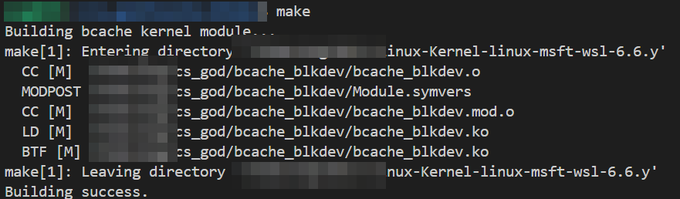
模块信息
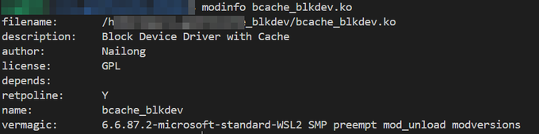
验证设备
格式化并挂载文件系统
sudo mkfs.ext4 /dev/ramdisk- 创建
ext4文件系统
- 创建
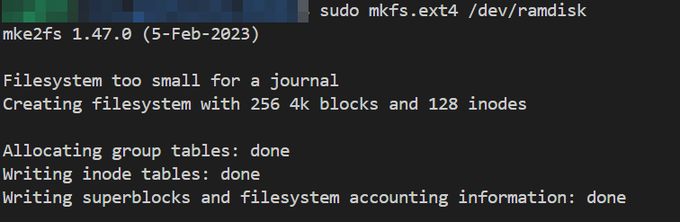
sudo mkdir /mnt/ramdisk- 创建挂载点目录
sudo mount /dev/ramdisk /mnt/ramdisk- 将设备上的文件系统连接到
/mnt/ramdisk
- 将设备上的文件系统连接到
mount | grep "/mnt/ramdisk"- 查看挂载点来源，证明用的是自己写的块设备文件系统
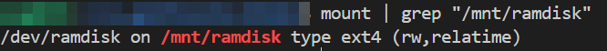
测试 ls
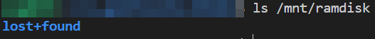
测试读写
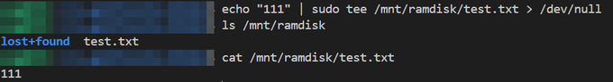
Buffer Cache
简述
RAM 磁盘每次请求都直接抄 disk_data
再加一层 缓存，命中就不用碰底层存储
这里我参考 xv6 Buffer Cache 写吧，然后有一些地方改了一下（比如 xv6 手写双向链表，我就直接用 list_head 了）
设备名换成 bcache，块大小 BSIZE = 4096，缓存槽 NBUF = 64
每个 缓存块 带有效位、脏位、引用计数、LRU 节点和 spinlock
bget 先在 LRU 上找 (dev, blockno)，命中就加引用，打 Cache hit，未命中从链表尾找 refcnt == 0 的槽，脏块先 disk_rw 写回，再改成新块号，brelse 把引用减掉，减到 0 就移回 LRU 头
读写走 bread / bwrite。请求处理里先把扇区换成块号和块内偏移，再 bread
卸载前 bsync_all 把脏块刷回去
实现
#include <linux/module.h>
#include <linux/kernel.h>
#include <linux/fs.h>
#include <linux/blkdev.h>
#include <linux/blk-mq.h>
#include <linux/vmalloc.h>
#include <linux/bio.h>
#include <linux/spinlock.h>
#include <linux/list.h>
MODULE_LICENSE("GPL");
MODULE_AUTHOR("Nailong");
MODULE_DESCRIPTION("Buffer Cache inspired by XV6");
#define DEV_NAME "bcache"
#define DISK_SIZE (1 * 1024 * 1024) //1MB
#define BSIZE 4096 //块大小
#define NBUF 64 //缓存块数量
//缓存块
struct buf {
int valid; //块是否包含有效数据
int dirty; //是否需要写回
uint dev; //设备号
sector_t blockno; //块号
uint refcnt; //引用计数
struct list_head lru; //LRU 链表
spinlock_t lock; //spinlock
char data[BSIZE]; //data
};
//缓存管理
struct {
spinlock_t lock;
struct buf buf[NBUF];
struct list_head head; //LRU 链表头
} bcache;
static int dev_major = 0; //主设备号
static dev_t dev_num; //设备号
static struct gendisk *disk = NULL; //磁盘设备
static struct blk_mq_tag_set tag_set; //多队列标签集
static unsigned char *disk_data = NULL; //磁盘数据
//统计信息
static struct {
unsigned long hits;
unsigned long misses;
unsigned long evictions;
} stats;
//块设备操作集
static struct block_device_operations bcache_fops = {
.owner = THIS_MODULE,
};
//磁盘读写
static void disk_rw(struct buf *b, int write) {
unsigned long offset = b->blockno * BSIZE;
if (offset + BSIZE > DISK_SIZE) {
printk(KERN_ERR "bcache: disk_rw beyond device capacity\n");
return;
}
if (write) {
//写入
memcpy(disk_data + offset, b->data, BSIZE);
printk(KERN_DEBUG "bcache: Write block %llu\n", (unsigned long long)b->blockno);
} else {
//读取
memcpy(b->data, disk_data + offset, BSIZE);
printk(KERN_DEBUG "bcache: Read block %llu\n", (unsigned long long)b->blockno);
}
}
//查找或分配缓存块
static struct buf* bget(uint dev, sector_t blockno) {
struct buf *b;
int found = 0;
spin_lock(&bcache.lock);
//查找缓存
list_for_each_entry(b, &bcache.head, lru) {
if (b->dev == dev && b->blockno == blockno) {
found = 1;
b->refcnt++;
spin_unlock(&bcache.lock);
spin_lock(&b->lock);
stats.hits++;
printk(KERN_DEBUG "bcache: Cache hit for block %llu\n", (unsigned long long)blockno);
return b;
}
}
if (!found) {
printk(KERN_DEBUG "bcache: Cache miss for block %llu\n", (unsigned long long)blockno);
}
//缓存未命中，需要回收
stats.misses++;
//从 LRU 链表尾部开始查找
list_for_each_entry_reverse(b, &bcache.head, lru) {
if (b->refcnt == 0) {
//找到可用块
//如果是脏块，先写回
if (b->dirty) {
disk_rw(b, 1); //write
b->dirty = 0;
}
b->dev = dev;
b->blockno = blockno;
b->valid = 0;
b->refcnt = 1;
spin_unlock(&bcache.lock);
spin_lock(&b->lock);
stats.evictions++;
printk(KERN_DEBUG "bcache: Evicted and allocated block %llu\n", (unsigned long long)blockno);
return b;
}
}
spin_unlock(&bcache.lock);
printk(KERN_ERR "bcache: bget: no buffers available\n");
return NULL;
}
//释放缓存块
static void brelse(struct buf *b) {
if (b == NULL)
return;
spin_unlock(&b->lock);
spin_lock(&bcache.lock);
b->refcnt--;
if (b->refcnt == 0) {
//移到 LRU 链表头部
list_move(&b->lru, &bcache.head);
}
spin_unlock(&bcache.lock);
}
//读取块
static struct buf* bread(uint dev, sector_t blockno) {
struct buf *b;
b = bget(dev, blockno);
if (b == NULL)
return NULL;
if (!b->valid) {
//读取
disk_rw(b, 0); //read
b->valid = 1;
}
return b;
}
//写入块
static void bwrite(struct buf *b) {
disk_rw(b, 1); //write
b->dirty = 0;
}
//标记块为脏块
static void bmark_dirty(struct buf *b) {
b->dirty = 1;
}
//请求处理函数
static blk_status_t bcache_queue_rq(struct blk_mq_hw_ctx *hctx, const struct blk_mq_queue_data *bd) {
struct request *req = bd->rq;
struct bio_vec bvec;
struct req_iterator iter;
sector_t sector;
void *buffer;
size_t len;
blk_mq_start_request(req);
sector = blk_rq_pos(req);
rq_for_each_segment(bvec, req, iter) {
sector_t blockno;
unsigned long offset_in_block;
struct buf *b;
len = bvec.bv_len;
if (sector + (len >> 9) > DISK_SIZE / SECTOR_SIZE) {
printk(KERN_ERR "bcache: Request beyond device capacity\n");
blk_mq_end_request(req, BLK_STS_IOERR);
return BLK_STS_IOERR;
}
//BSIZE / SECTOR_SIZE 一个块内包含多少扇区
//sector / (BSIZE / SECTOR_SIZE) 计算块号
blockno = sector / (BSIZE / SECTOR_SIZE);
//块内偏移
offset_in_block = (sector % (BSIZE / SECTOR_SIZE)) * SECTOR_SIZE;
buffer = kmap_atomic(bvec.bv_page);
b = bread(0, blockno); //dev = 0
if (b == NULL) {
kunmap_atomic(buffer);
blk_mq_end_request(req, BLK_STS_IOERR);
return BLK_STS_IOERR;
}
if (rq_data_dir(req) == WRITE) {
//写
memcpy(b->data + offset_in_block, buffer + bvec.bv_offset, len);
bmark_dirty(b);
} else {
//读
memcpy(buffer + bvec.bv_offset, b->data + offset_in_block, len);
}
brelse(b);
kunmap_atomic(buffer);
sector += len >> 9;
}
blk_mq_end_request(req, BLK_STS_OK);
return BLK_STS_OK;
}
//多队列操作集
static struct blk_mq_ops bcache_mq_ops = {
.queue_rq = bcache_queue_rq,
};
//初始化缓存
static void binit(void) {
struct buf *b;
int i;
spin_lock_init(&bcache.lock);
INIT_LIST_HEAD(&bcache.head);
//初始化所有缓存块并加入 LRU 链表
for (i = 0; i < NBUF; i++) {
b = &bcache.buf[i];
b->valid = 0;
b->dirty = 0;
b->dev = 0;
b->blockno = 0;
b->refcnt = 0;
spin_lock_init(&b->lock);
//加入 LRU 链表
list_add(&b->lru, &bcache.head);
}
printk(KERN_INFO "bcache: Buffer cache initialized (XV6 style)\n");
printk(KERN_INFO "bcache: %d buffers, %d bytes per buffer\n", NBUF, BSIZE);
}
//同步所有脏块
static void bsync_all(void) {
struct buf *b;
int dirty_count = 0;
printk(KERN_INFO "bcache: Syncing all dirty blocks...\n");
spin_lock(&bcache.lock);
list_for_each_entry(b, &bcache.head, lru) {
if (b->valid && b->dirty) {
spin_lock(&b->lock);
bwrite(b);
spin_unlock(&b->lock);
dirty_count++;
}
}
spin_unlock(&bcache.lock);
printk(KERN_INFO "bcache: Synced %d dirty blocks\n", dirty_count);
}
//模块初始化
static int __init bcache_init(void) {
int ret;
//分配底层存储
disk_data = vmalloc(DISK_SIZE);
if (!disk_data) {
printk(KERN_ERR "bcache: Failed to allocate disk memory\n");
return -ENOMEM;
}
memset(disk_data, 0, DISK_SIZE);
//初始化缓存
binit();
memset(&stats, 0, sizeof(stats));
//注册块设备
dev_major = register_blkdev(0, DEV_NAME);
if (dev_major < 0) {
printk(KERN_ERR "bcache: Failed to register block device\n");
ret = dev_major;
vfree(disk_data);
return ret;
}
dev_num = MKDEV(dev_major, 0);
//初始化多队列
memset(&tag_set, 0, sizeof(tag_set));
tag_set.ops = &bcache_mq_ops;
tag_set.nr_hw_queues = 1;
tag_set.queue_depth = 128;
tag_set.numa_node = NUMA_NO_NODE;
tag_set.flags = BLK_MQ_F_SHOULD_MERGE;
ret = blk_mq_alloc_tag_set(&tag_set);
if (ret) {
printk(KERN_ERR "bcache: Failed to allocate tag set\n");
unregister_blkdev(dev_major, DEV_NAME);
vfree(disk_data);
return ret;
}
//分配磁盘
disk = blk_mq_alloc_disk(&tag_set, NULL);
if (IS_ERR(disk)) {
printk(KERN_ERR "bcache: Failed to allocate disk\n");
ret = PTR_ERR(disk);
blk_mq_free_tag_set(&tag_set);
unregister_blkdev(dev_major, DEV_NAME);
vfree(disk_data);
return ret;
}
//设置磁盘属性
disk->major = MAJOR(dev_num);
disk->first_minor = 0;
disk->minors = 1;
disk->fops = &bcache_fops;
strcpy(disk->disk_name, DEV_NAME);
set_capacity(disk, DISK_SIZE / SECTOR_SIZE);
//添加磁盘
ret = add_disk(disk);
if (ret) {
printk(KERN_ERR "bcache: Failed to add disk\n");
put_disk(disk);
blk_mq_free_tag_set(&tag_set);
unregister_blkdev(dev_major, DEV_NAME);
vfree(disk_data);
return ret;
}
printk(KERN_INFO "%s: RAM disk initialized (%d MB)\n", DEV_NAME, DISK_SIZE >> 20);
return 0;
}
//模块退出
static void __exit bcache_exit(void) {
//同步所有脏块
bsync_all();
//清理块设备
if (disk) {
del_gendisk(disk);
put_disk(disk);
}
blk_mq_free_tag_set(&tag_set);
if (dev_major > 0)
unregister_blkdev(dev_major, DEV_NAME);
vfree(disk_data);
printk(KERN_INFO "%s: unloaded\n", DEV_NAME);
}
module_init(bcache_init);
module_exit(bcache_exit);
bget 命中会 printk Cache hit，未命中打 Cache miss，回收打 Evicted and allocated
请求处理里：
BSIZE / SECTOR_SIZE是一个块里有多少扇区sector / (BSIZE / SECTOR_SIZE)算块号(sector % (BSIZE / SECTOR_SIZE)) * SECTOR_SIZE是块内偏移- 写路径
memcpy进b->data之后bmark_dirty - 读路径从
b->data抄回buffer - 用完
brelse，再kunmap_atomic
挂载方式和 RAM 磁盘一样，设备换成 /dev/bcache
- 插入模块：
sudo insmod bcache.ko - 卸载模块：
sudo rmmod bcache - 查看模块信息：
modinfo bcache.ko
编译模块
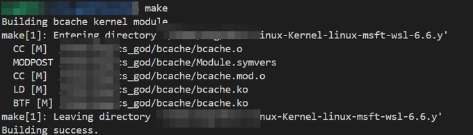
模块信息
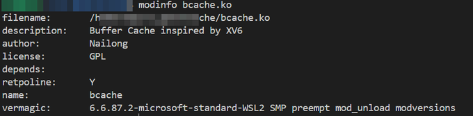
验证设备
格式化并挂载文件系统
sudo mkfs.ext4 /dev/bcache- 创建
ext4文件系统
- 创建
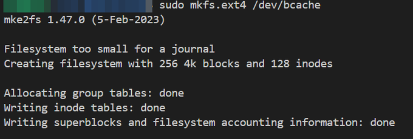
sudo mkdir /mnt/bcache- 创建挂载点目录
sudo mount /dev/bcache /mnt/bcache- 将设备上的文件系统连接到
/mnt/bcache
- 将设备上的文件系统连接到
mount | grep "/mnt/bcache"- 查看挂载点来源，证明用的是自己写的块设备文件系统
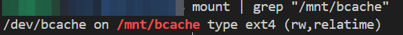
测试 ls
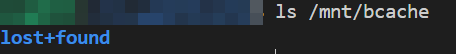
测试读写
echo "111" | sudo tee /mnt/bcache/test.txt > /dev/nullls /mnt/bcachecat /mnt/bcache/test.txt
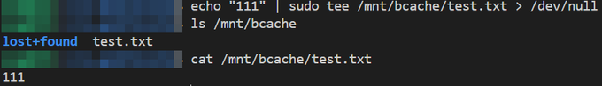
验证块缓存功能
这里我就不用查看 Cache 的工具了，而是直接在代码中写，如果块缓存成功的话，应该会有 Cache hit 字样
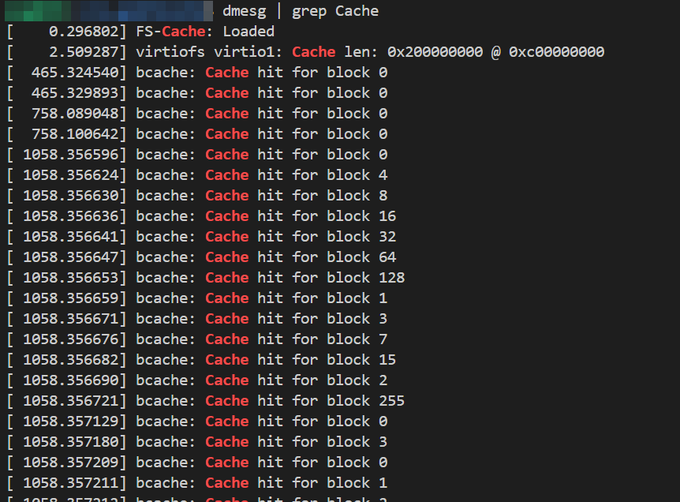
Linux 里其他缓存
事实上，除了 Buffer Cache 外，还有不少缓存
- 页缓存（Page Cache）
- 用来缓存文件系统的数据页
- 加速文件的读取和写入操作
- 管理文件 IO
- 缓冲区缓存（Buffer Cache）
- 虽然是「其他」的缓存模块，不过这里就理解成我凑字数吧
- 缓冲区缓存是 xv6 文件系统的一个层，用于对磁盘中的 block 块在内存里存副本，方便高速操作
- 与 Page Cache 共享缓存池
- 目录项缓存（Dentry Cache）
- 提高目录项对象的处理效率
- 由哈希链表
dentry_hashtable和未使用的 dentry 对象链表dentry_unused组成 - 缓存文件路径到 inode 的映射
- 使用 LRU 算法管理
- 读写缓存
- Linux 系统的读写是有缓存的，以此加快 IO 的速度
- 第一次读取一个文件的时候，操作系统会把文件内容读入 cache，然后返回给用户
- 第二次读取的时候首先会从 cache 中检查，命中后返回给用户
- Inode Cache
- 缓存 inode 对象，加快对索引节点的索引
- 减少从磁盘读取 inode 的次数
- 与 Dentry Cache 配合工作
- Slab / Slub / Slob Cache
- 这三个都是内核对象分配器，它们其实也是有缓存的
- 实际上
kmalloc就是使用的 Slab Cache - 减少频繁分配释放的开销
- 按对象类型分组
inode
理解 inode，要从文件储存说起
文件储存在硬盘上，硬盘的最小存储单位叫做 扇区（Sector）。每个扇区储存 512 字节（相当于 0.5KB）
操作系统读取硬盘的时候，不会一个个扇区地读取，这样效率太低，而是一次性连续读取多个扇区，即一次性读取一个 块（block）
这种由多个扇区组成的块，是 文件存取的最小单位。块的大小最常见的是 4KB，即连续八个 sector 组成一个 block
文件数据都储存在块中，那么还必须找到一个地方储存文件的元信息，比如文件的创建者、创建日期、文件大小。这种储存文件元信息的区域就叫做 inode，中文译名为「索引节点」
每一个文件都有对应的 inode，里面包含了与该文件有关的一些信息
inode 包含文件的元信息，具体来说有：
- 文件的字节数
- 文件拥有者的 User ID
- 文件的 Group ID
- 文件的读、写、执行权限
- 文件的时间戳，共有三个：
ctime指 inode 上一次变动的时间，mtime指文件内容上一次变动的时间，atime指文件上一次打开的时间 - 链接数，即有多少文件名指向这个 inode
- 文件数据 block 的位置
硬链接
一般情况下，文件名和 inode 号码是一一对应关系，每个 inode 号码对应一个文件名。但是 Unix / Linux 系统允许多个文件名指向同一个 inode 号码
这意味着，可以用不同的文件名访问同样的内容。对文件内容进行修改，会影响到所有文件名。但是，删除一个文件名，不影响另一个文件名的访问。这种情况就被称为硬链接（hard link）
ln 可以创建硬链接：
ln 源文件 目标文件
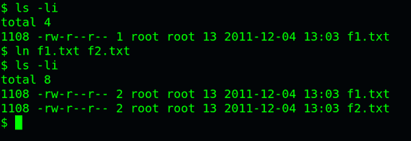
运行上面这条命令以后，源文件与目标文件的 inode 号码相同，都指向同一个 inode。inode 信息中有一项叫做「链接数」，记录指向该 inode 的文件名总数，这时就会增加 1
反过来，删除一个文件名，就会使得 inode 节点中的「链接数」减 1。当这个值减到 0，表明没有文件名指向这个 inode，系统就会回收这个 inode 号码，以及其所对应 block 区域
这里顺便说一下目录文件的「链接数」。创建目录时，默认会生成两个目录项：. 和 ..。前者的 inode 号码就是当前目录的 inode 号码，等同于当前目录的硬链接。后者的 inode 号码就是当前目录的父目录的 inode 号码，等同于父目录的硬链接。所以，任何一个目录的硬链接总数，总是等于 2 加上它的子目录总数（含隐藏目录）
软链接
除了硬链接以外，还有一种特殊情况
文件 A 和文件 B 的 inode 号码虽然不一样，但是文件 A 的内容是文件 B 的路径。读取文件 A 时，系统会自动将访问者导向文件 B。因此，无论打开哪一个文件，最终读取的都是文件 B。这时，文件 A 就称为文件 B 的软链接（soft link）或者符号链接（symbolic link）
这意味着，文件 A 依赖于文件 B 而存在，如果删除了文件 B，打开文件 A 就会报错：No such file or directory。这是软链接与硬链接最大的不同：文件 A 指向文件 B 的文件名，而不是文件 B 的 inode 号码，文件 B 的 inode「链接数」不会因此发生变化
ln -s 可以创建软链接：
ln -s 源文件或目录 目标文件或目录
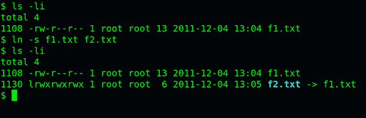
Slab / Slub / Slob
引导内存分配器
在内核初始化的过程中需要分配内存（包括物理内存分配器也要被分配内存和初始化），内核提供了临时的引导内存分配器。在页分配器和块分配器初始化完毕后，把空闲的物理页交给页分配器管理，丢弃引导内存分配器
Slab 分配器
slab 分配器分配内存以 字节 为单位，基于伙伴分配器（分配 页）的大内存进一步细分成小内存分配（将内存页切割成一组大小相同的对象）。换句话说，slab 分配器仍然从 Buddy 分配器中申请内存，之后自己对申请来的内存细分管理
除了提供小内存外，slab 分配器的第二个任务是维护常用对象的缓存。对于内核中使用的许多结构，初始化对象 所需的时间可等于或超过 为其分配空间 的成本
- 当创建一个新的 slab 时，许多对象将被打包到其中，并使用构造函数（如果有）进行初始化
- 释放对象后，它会保持其 初始化状态，这样可以 快速分配对象
slub 就是在之前 slab 上优化后的一个产物，去除了许多臃肿的实现，逐渐会完全替代老的 slab
- SLUB 通过 使用对象的 SLAB（不再缓存对象本身，而是缓存「当前 slab 页」到每个 CPU，然后用 bitmap 来处理） 而不是 对象队列 来实现每个 CPU 的缓存
slob 则是一个很轻量级的 slab 实现，代码量不大，官方说适合一些嵌入式设备

说些什么吧！